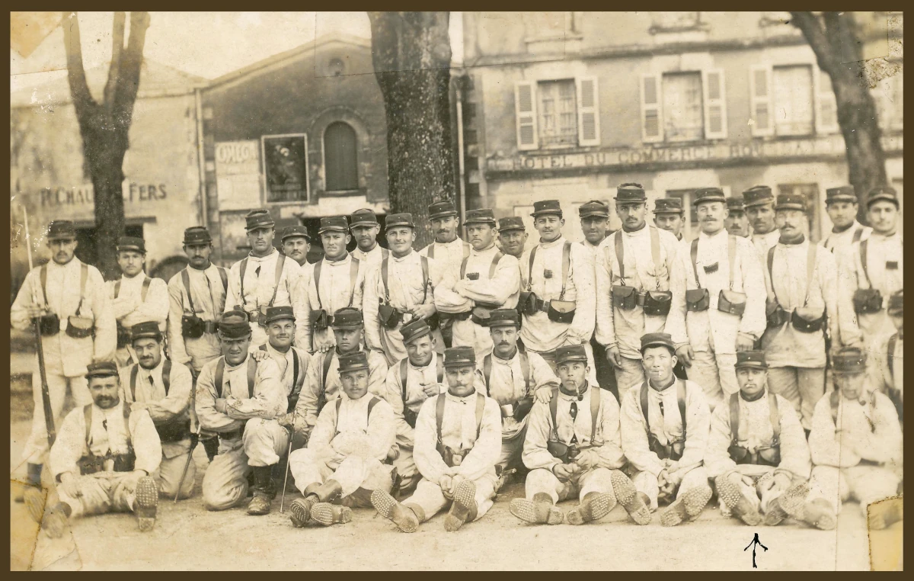
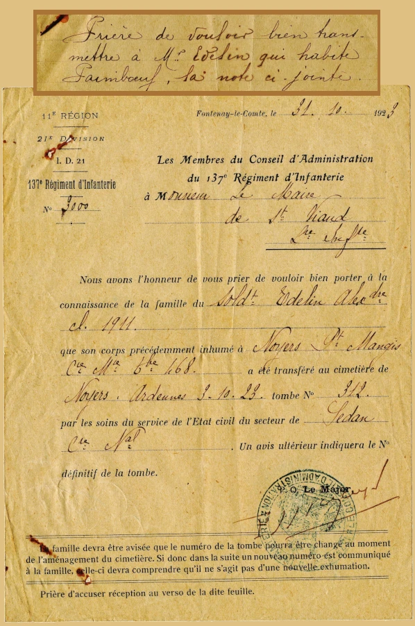
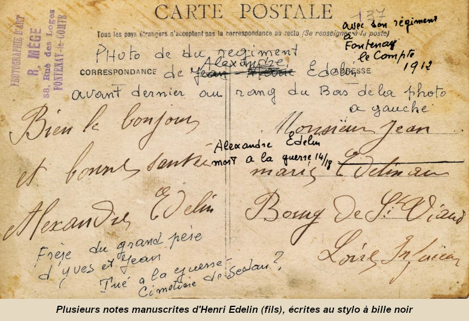
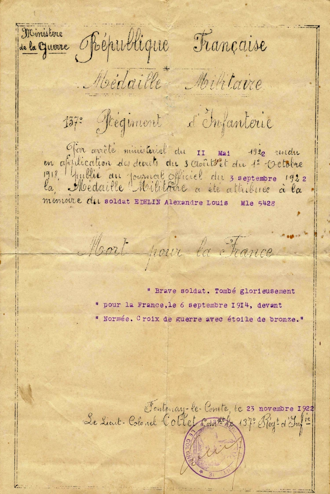
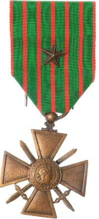

Alexandre naît le 4 janvier 1891 à Saint-Viaud (Loire-Inférieure). C’est le frère cadet d’Henri et,
selon son registre matricule, il est cultivateur.
Il est incorporé le 9 octobre 1912 comme soldat de 2ᵉ classe au 137ᵉ Régiment d’Infanterie,
situé à Fontenay-le-Comte (Vendée).
Lorsque la Grande Guerre éclate, il est encore sous les drapeaux. Quelques mois plus tôt, le 23 mai 1914,
il était apparu en habit militaire sur la photo de mariage de son frère Henri.
D’après son registre matricule, il participe aux combats de la bataille de la Marne dans le secteur des Marais de Saint-Gond. Il est déclaré disparu le 6 septembre 1914 à Normée-Fère-Champenoise (Marne) par un courrier du Ministère de la Guerre en date du 16 décembre 1914.
Il reçoit la Médaille militaire Croix de guerre à titre posthume le 3 septembre 1922 avec les mentions :
« Mort pour la France » « Brave soldat. Tombé glorieusement pour la France,le 6 septembre 1914, devant Normée. » « Croix de guerre avec étoile de bronze. »
Neuf ans après sa disparition, une note du 137ᵉ régiment, datée du 31 octobre 1923,
informe la famille (en réalité Henri Edelin, dernier survivant) que le corps du soldat
Alexandre Edelin a été transféré de Noyers-Saint-Mangis au cimetière de Noyers le 3 octobre 1923,
dans la tombe n° 312.
Le corps d'Alexandre a donc été retrouvé et enterré dignement.
Nécropole nationale de Noyers-Pont-Maugis "La Marfée" (Ardennes)
Il reste à expliquer pourquoi Alexandre a été déclaré disparu à Fère-Champenoise, alors que son
corps repose dans le cimetière militaire de Noyers (Ardennes), à 150 km au nord-est de son lieu
de disparition. Pourquoi ne repose-t-il pas dans la nécropole de Fère-Champenoise, où sont enterrés
6 000 soldats français ?
A-t-il été fait prisonnier par les allemands et amené vers leurs arrières, il serait mort
de ses blessures ensuite et enterré dans un cimetière provisoire du coté de Noyers au sud de Sedan ?
Autre hypothèse : il serait mort quelques jours avant le 6 septembre. Selon l'historique de son
régiment, le 137ᵉ se trouvait du côté de Sedan le 15 août, avant de reculer sur Noyers le 27 août.
En effet, depuis le 21 août, plusieurs combats meurtriers s'étaient déjà enchaînés pour le 137ᵉ.
Ensuite, c’est la retraite vers la vallée de la Marne et les marais de Saint-Gond,
avant une reprise des combats.
Alexandre a-t-il été tué dans les environs de Noyers pendant le repliement précipité et sa disparition
constatée plus tard ? Il aurait été enterré sur place par les allemands qui ont tenu ce territoire pendant les années de guerre.
Laissons le temps faire apparaître d'autres indices sur les circonstances exactes de
la mort d'Alexandre.
137ᵉ régiment d'infanterie de Fontenay-le-Comte (1912) – Régiment d'Alexandre.

Avis de disparition d'Alexandre

Avis de déplacement du corps d'Alexandre

Carte postale d'Alexandre à son frère Jean Marie

Arreté d'attribution de la croix de guerre
Lorsque Alexandre fut témoin au mariage de son frère Henri, il ignorait qu'il ne lui restait plus que
trois mois et demi à vivre avant de périr au champ d'honneur.
Sa mère, sa sœur Jeanne et son frère Jean-Marie ne sauront jamais ce qu'il est advenu de son corps.
Triste hasard de l’histoire : Lucien Louineau (21 ans), futur beau-père d’Henri Edelin (fils),
appartenait lui aussi au 137ᵉ. Il fut transpercé à la poitrine et au bras par des balles de fusil le lendemain,
le 7 septembre 1914, sur le même champ de bataille à Fère-Champenoise.
Lucien aura cependant la chance de survivre à ses blessures.


Alexandre Edelin
Alexandre naît le 4 janvier 1891 à Saint-Viaud (Loire-Inférieure). C’est le frère cadet d’Henri et, selon son registre matricule, il est cultivateur. Il est incorporé le 9 octobre 1912 comme soldat de 2ᵉ classe au 137ᵉ Régiment d’Infanterie, situé à Fontenay-le-Comte (Vendée).
Lorsque la Grande Guerre éclate, il est encore sous les drapeaux. Quelques mois plus tôt, le 23 mai 1914, il était apparu en habit militaire sur la photo de mariage de son frère Henri.
D’après son registre matricule, il participe aux combats de la bataille de la Marne dans le secteur des Marais de Saint-Gond. Il est déclaré disparu le 6 septembre 1914 à Normée-Fère-Champenoise (Marne) par un courrier du Ministère de la Guerre en date du 16 décembre 1914. Il reçoit la Médaille militaire Croix de guerre à titre posthume le 3 septembre 1922 avec les mentions :
« Mort pour la France »
« Brave soldat. Tombé glorieusement pour la France,le 6 septembre 1914, devant Normée. »
« Croix de guerre avec étoile de bronze. »

Bataille_des_Marais_de_Saint-Gond
Neuf ans après sa disparition, une note du 137ᵉ régiment, datée du 31 octobre 1923, informe la famille (en réalité Henri Edelin, dernier survivant) que le corps du soldat Alexandre Edelin a été transféré de Noyers-Saint-Mangis au cimetière de Noyers le 3 octobre 1923, dans la tombe n° 312.
Le corps d'Alexandre a donc été retrouvé et enterré dignement.
"La Marfée" (Ardennes)
necropole-nationale-de-noyers-pont-maugis-la-marfee
Il reste à expliquer pourquoi Alexandre a été déclaré disparu à Fère-Champenoise, alors que son corps repose dans le cimetière militaire de Noyers (Ardennes), à 150 km au nord-est de son lieu de disparition. Pourquoi ne repose-t-il pas dans la nécropole de Fère-Champenoise, où sont enterrés 6 000 soldats français ?
A-t-il été fait prisonnier par les allemands et amené vers leurs arrières, il serait mort de ses blessures ensuite et enterré dans un cimetière provisoire du coté de Noyers au sud de Sedan ?
Autre hypothèse : il serait mort quelques jours avant le 6 septembre. Selon l'historique de son régiment, le 137ᵉ se trouvait du côté de Sedan le 15 août, avant de reculer sur Noyers le 27 août. En effet, depuis le 21 août, plusieurs combats meurtriers s'étaient déjà enchaînés pour le 137ᵉ. Ensuite, c’est la retraite vers la vallée de la Marne et les marais de Saint-Gond, avant une reprise des combats.
Alexandre a-t-il été tué dans les environs de Noyers pendant le repliement précipité et sa disparition constatée plus tard ?
Il aurait été enterré sur place par les allemands qui ont tenu ce territoire pendant les années de guerre.
Laissons le temps faire apparaître d'autres indices sur les circonstances exactes de la mort d'Alexandre.